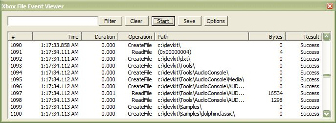
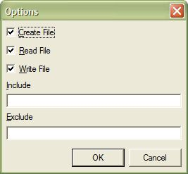

The Xbox File Event Viewer is a tool for observing activity on an Xbox console's file system. The tool displays information about file system events, which is information that may be used for debugging or performance optimization. The following image shows the File Event Viewer in action:

Just as you can with any other tool window in Visual Studio .NET, you can do the following with Xbox File Event Viewer: 1) reposition the Xbox Surface Viewer by dragging its title bar, 2) resize the tool by dragging the window's lower-right corner, or 3) dock the tool by dragging its title bar to the desired point at the edge of the screen.
Note Before using the File Event Viewer tool, it is highly recommended that you use the Remote Configuration tool (XbSetCfg) with the -t option to synchronize the time on your \ developement Xbox with the time on your host development PC.
To start the Xbox File Event Viewer, from the Tools menu, select Xbox File Event Viewer.
To begin capturing file events, click the Start button. While the Xbox File Event Viewer is collecting information, the Start button's caption changes to Stop. To stop collecting data, click Stop.
To sort the list of file events, click the heading of the column you would like to sort. To reverse the sort order, click the column heading a second time.
To filter the results, enter a string into the text box to the left of the Filter button, and then click Filter. Xbox File Event Viewer then limits its display to those events whose path contains the string in the text box. Filtering is case-insensitive. To filter based on more than one string, enter multiple strings into the text box, delimited by semicolons (;).
To clear the file events, click Clear.
To save the file events to a comma-separated value file (.csv), click Save. The Xbox File Event Viewer prompts you for a file name and location in which to save the .csv file.
To change which file events are captured by the Xbox File Event Viewer, click Options. The Options dialog box appears, as shown here:

Select the appropriate check boxes for the event types you wish to capture. Xbox File Event Viewer remembers the settings in the Options dialog box between invocations of the tool.
The Include and Exclude text boxes serve a similar function to the Filter text box on the Xbox File Event Viewer's main screen. However, instead of just visually filtering the contents of the file event log, these two text boxes prevent filtered file events from appearing in the log at all. The Include text box functions exactly the same way as the Filter text box: Enter a semicolon-delimited list of strings that must be present in the path of each file event. The Exclude text box prevents logging any file event whose path contains text matching the strings listed in the text box.